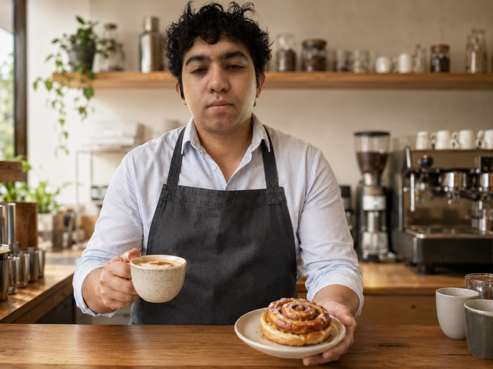
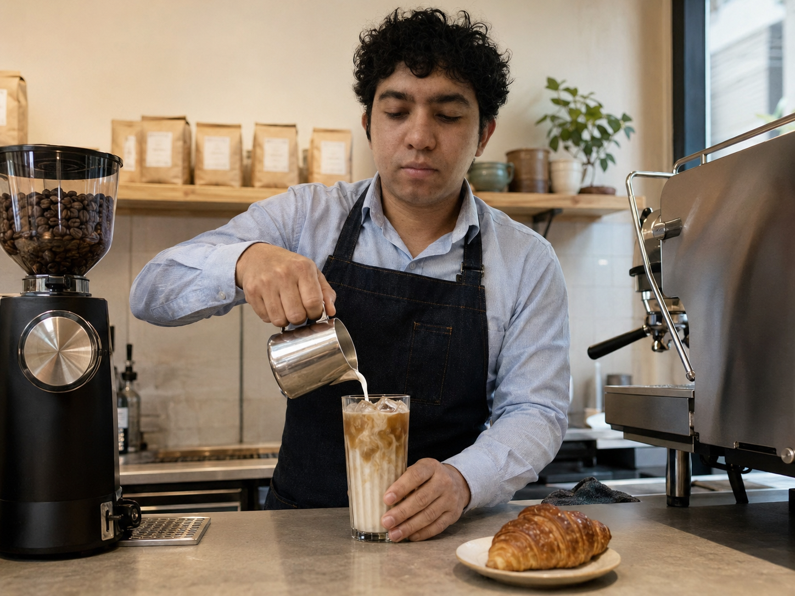

Misión
Servir productos frescos con trato cercano y responsable.
Bebidas cuidadas, pan recién horneado y un espacio cálido inspirado en nuestra comunidad.
Ver menú
Nacimos para crear un punto de encuentro donde cada taza se prepare con atención y cada persona se sienta bienvenida.
Servir productos frescos con trato cercano y responsable.
Ser la cafetería favorita de nuestra comunidad.
Calidez, sencillez y orgullo por nuestra comunidad.

Antonio Reyes #1515, Buena Vista Sur, C.P. 26040 · Lunes a sábado 7:00–21:00 · Domingo 8:00–18:00 · 878 126 5153